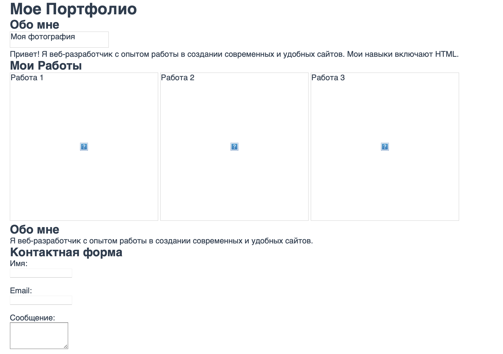

Статья 1
Содержимое статьи 1.
Изучайте Web-разработку в интерактивном формате
В самом начале небольшой организационный момент - это простой ознакомительный курс который служит для передачи базовых знаний.
Работать можно в встроенном редакторе но мы рекомендуем скачать программу для разработки и работать в ней.
Хоть практики не обязательны к выполнению но мы рекомендуем также и выполнять их для закреплния материала.
Веб-разработка — это процесс создания веб-сайтов и веб-приложений, которые работают в интернете. Она включает в себя проектирование, верстку, программирование и настройку функциональности сайта.
Веб-разработка делится на два основных направления: фронтенд и бекенд. С ними мы разберемся чуть позже.
Клиент-серверная архитектура — это модель взаимодействия между клиентом (например, браузером) и сервером (компьютером, который обрабатывает запросы).
* Клиент отправляет запросы (например, "покажи главную страницу сайта").
* Сервер обрабатывает запрос и возвращает ответ (например, HTML-код страницы).
Для создания фронтенда используются три основные технологии:
* HTML (HyperText Markup Language) — язык разметки, который определяет структуру страницы (заголовки, параграфы, изображения и т.д.).
* CSS (Cascading Style Sheets) — язык стилей, который отвечает за внешний вид страницы (цвета, шрифты, расположение элементов).
* JavaScript — язык программирования, который добавляет интерактивность на страницу (например, анимации, обработка кликов, загрузка данных без перезагрузки страницы).
Для работы фронтенд-разработчику необходимы следующие инструменты:
* Браузеры (Google Chrome, Firefox, Safari и др.) — программы для просмотра и тестирования веб-страниц.
* Текстовые редакторы (VS Code, Sublime Text, Atom) — программы для написания и редактирования кода.
* DevTools (Инструменты разработчика) — встроенные в браузеры инструменты для отладки кода, анализа производительности и тестирования страниц.
Что делает сервер в клиент-серверной архитектуре?
Какую технологию используют для стилизации веб-страниц?
Какой инструмент помогает разработчику отлаживать код в браузере?
Какой язык программирования добавляет интерактивность на страницу?
* Веб-разработка — это создание сайтов и веб-приложений, включающее фронтенд (видимую часть) и бэкенд (логику и данные).
* Клиент-серверная архитектура — это взаимодействие между клиентом (браузером) и сервером, где фронтенд отвечает за отображение, а бэкенд — за обработку данных.
* Основные технологии фронтенда — HTML (структура), CSS (стили) и JavaScript (интерактивность).
* Инструменты разработчика — браузеры, текстовые редакторы и DevTools — помогают создавать, тестировать и отлаживать веб-страницы.
* Теперь вы знаете основы фронтенд-разработки и готовы двигаться дальше! 🚀
HTML (HyperText Markup Language) — это язык разметки, который используется для создания структуры веб-страницы. Он состоит из набора тегов, которые определяют, как содержимое (текст, изображения, ссылки) будет отображаться в браузере.
* HyperText — это текст, который содержит ссылки на другие страницы или ресурсы.
* Markup Language — язык разметки, который использует теги для оформления содержимого.
HTML не является языком программирования — он отвечает только за структуру и содержание страницы.
Веб-сайт состоит из нескольких основных компонентов:
1. HTML — определяет структуру и содержание страницы.
2. CSS — отвечает за внешний вид (цвета, шрифты, отступы).
3. JavaScript — добавляет интерактивность (анимации, обработка кликов).
4. Медиа-файлы — изображения, видео, аудио.
5. Данные — информация, которая может храниться на сервере или в базе данных.
Структура страницы обычно включает:
- <head> — содержит метаинформацию о странице (заголовок, кодировку, стили).
- <main> — основная часть страницы, где находится основной контент.
- <footer> — нижняя часть страницы, где размещается дополнительная информация (контакты, ссылки, авторские права).
HTML — это основа, на которой строится весь сайт.
Каждый HTML-документ имеет стандартную структуру:
1. <html> — корневой элемент, который содержит весь документ.
2. <head> — содержит метаинформацию о странице (заголовок, кодировку, стили).
3. <body> — основная часть документа, где размещается видимое содержимое (текст, изображения, ссылки).
Пример структуры:
<!DOCTYPE html>
<html>
<head>
<meta charset="UTF-8">
<title>Название страницы</title>
</head>
<body>
<header>Шапка сайта</header>
<main>Основной контент</main>
<footer>Подвал сайта</footer>
</body>
</html>
* <head> — это часть HTML-документа, которая содержит метаинформацию о странице. Здесь указываются:
- Заголовок страницы (<title>).
- Кодировка (<meta charset="UTF-8">).
- Ссылки на стили (<link rel="stylesheet" href="styles.css">).
- Скрипты (<script src="script.js"></script>).
* <body> — это часть HTML-документа, где размещается всё видимое содержимое страницы: текст, изображения, ссылки, кнопки и другие элементы.
Метатеги — это специальные теги, которые размещаются в <head> и предоставляют браузерам и поисковым системам информацию о странице. Примеры:
1. Кодировка:
<meta charset="UTF-8"> — указывает кодировку страницы.
2. Описание страницы:
<meta name="description" content="Описание страницы"> — используется поисковыми системами для отображения краткого описания страницы.
3. Ключевые слова:
<meta name="keywords" content="HTML, CSS, JavaScript"> — указывает ключевые слова, связанные с содержимым страницы.
4. Viewport:
<meta name="viewport" content="width=device-width, initial-scale=1.0"> — помогает корректно отображать страницу на мобильных устройствах.
Что такое HTML?
Где размещается видимое содержимое страницы?
Какой тег используется для указания кодировки страницы?
Какой тег используется для создания заголовка страницы?
Какой метатег помогает корректно отображать страницу на мобильных устройствах?
* Домен — это уникальный адрес сайта в интернете (например, google.com). Он помогает пользователям легко находить сайт без необходимости запоминать сложные IP-адреса серверов.
* Хостинг — это услуга, которая предоставляет место на сервере для хранения файлов сайта (HTML, CSS, изображения и т.д.). Без хостинга сайт не сможет работать в интернете.
* Состав сайта:
- <head> — содержит метаинформацию о странице (заголовок, кодировку, стили).
- <main> — основная часть страницы, где находится основной контент.
- <footer> — нижняя часть страницы, где размещается дополнительная информация (контакты, ссылки, авторские права).
* HTML — это язык разметки, который создает структуру веб-страницы.
* Веб-сайт состоит из HTML, CSS, JavaScript и медиа-файлов.
* <head> содержит метаинформацию о странице, а <body> — видимое содержимое.
* Метатеги предоставляют браузерам и поисковым системам информацию о странице.
* Теперь вы знаете основы HTML и готовы создавать свои первые веб-страницы! 🚀
В HTML текст является основным элементом любой веб-страницы. Для работы с текстом используются различные теги, которые позволяют структурировать и форматировать содержимое. Давайте разберем основные теги для работы с текстом.
Заголовки используются для создания структуры текста и выделения важных разделов. В HTML существует шесть уровней заголовков, от <h1> до <h6>:
- <h1> — заголовок первого уровня (самый важный).
- <h2> — заголовок второго уровня.
- <h3> — заголовок третьего уровня.
- <h4> — заголовок четвертого уровня.
- <h5> — заголовок пятого уровня.
- <h6> — заголовок шестого уровня (наименее важный).
Пример использования:
<h1>Главный заголовок</h1>
<h2>Подзаголовок</h2>
<h3>Дополнительный заголовок</h3>
Для создания абзацев текста используется тег <p>. Каждый абзац начинается с новой строки и отделяется от других абзацев отступом.
Пример:
<p>Это первый абзац текста.</p>
<p>Это второй абзац текста.</p>
HTML предоставляет теги для форматирования текста. Вот основные из них:
- <strong> — выделяет текст жирным.
- <em> — выделяет текст курсивом.
- <u> — подчеркивает текст.
- <s> — зачеркивает текст.
- <br> — перенос строки (одиночный тег).
- <hr> — горизонтальная линия (одиночный тег).
Пример:
<p>Это <strong>жирный</strong> текст.</p>
<p>Это <em>курсив</em> текст.</p>
<p>Это <u>подчеркнутый</u> текст.</p>
<p>Это <s>зачеркнутый</s> текст.</p>
Большинство тегов в HTML являются парными, то есть у них есть открывающий и закрывающий тег. Закрывающий тег отличается от открывающего наличием слэша / перед названием тега.
Пример:
<p>Это абзац текста.</p>
<h1>Это заголовок.</h1>
<strong>Это жирный текст.</strong>
Некоторые теги, такие как <br> и <hr>, не требуют закрывающего тега, так как они являются одиночными.
<!DOCTYPE html>
<html>
<head>
<title>Пример работы с текстом</title>
</head>
<body>
<h1>Заголовок первого уровня</h1>
<p>Это <strong>жирный</strong> текст.</p>
<p>Это <em>курсив</em> текст.</p>
<p>Это <u>подчеркнутый</u> текст.</p>
<p>Это <s>зачеркнутый</s> текст.</p>
<hr>
<p>Это новый абзац после горизонтальной линии.</p>
</body>
</html>
1. Какой тег используется для создания абзаца?
2. Какой тег делает текст жирным?
3. Какой тег используется для создания заголовка второго уровня?
4. Какой тег подчеркивает текст?
5. Какой тег используется для переноса строки?
* Заголовки — используются для структурирования текста (теги <h1>–<h6>).
* Параграфы — создаются с помощью тега <p>.
* Форматирование текста — теги <strong>, <em>, <u>, <s>.
* Синтаксис — большинство тегов нужно закрывать, например, <p></p>.
Сегодня вы изучили, как работать с текстом в HTML: создавать заголовки, абзацы и форматировать текст. Вы также узнали о синтаксисе тегов и их правильном использовании. В следующем уроке мы рассмотрим ссылки и изображения.
Списки в HTML используются для структурирования информации. Они помогают организовать данные в виде маркированных, нумерованных или определений. В HTML существует три основных типа списков:
Маркированные списки создаются с помощью тега <ul> (unordered list). Каждый элемент списка обозначается тегом <li> (list item). По умолчанию элементы маркируются точками.
Пример:
<ul>
<li>Первый элемент</li>
<li>Второй элемент</li>
<li>Третий элемент</li>
</ul>
Результат:
Нумерованные списки создаются с помощью тега <ol> (ordered list). Каждый элемент списка также обозначается тегом <li>. Элементы автоматически нумеруются.
Пример:
<ol>
<li>Первый элемент</li>
<li>Второй элемент</li>
<li>Третий элемент</li>
</ol>
Результат:
Список определений используется для создания пар "термин-определение". Он создается с помощью тега <dl> (definition list). Каждый термин обозначается тегом <dt> (definition term), а определение — тегом <dd> (definition description).
Пример:
<dl>
<dt>HTML</dt>
<dd>Язык разметки для создания веб-страниц.</dd>
<dt>CSS</dt>
<dd>Язык стилей для оформления веб-страниц.</dd>
<dt>JavaScript</dt>
<dd>Язык программирования для добавления интерактивности.</dd>
</dl>
Результат:
<!DOCTYPE html>
<html>
<head>
<title>Пример списков</title>
</head>
<body>
<h1>Пример маркированного списка</h1>
<ul>
<li>Первый элемент</li>
<li>Второй элемент</li>
<li>Третий элемент</li>
</ul>
<h1>Пример нумерованного списка</h1>
<ol>
<li>Первый элемент</li>
<li>Второй элемент</li>
<li>Третий элемент</li>
</ol>
<h1>Пример списка определений</h1>
<dl>
<dt>HTML</dt>
<dd>Язык разметки для создания веб-страниц.</dd>
<dt>CSS</dt>
<dd>Язык стилей для оформления веб-страниц.</dd>
<dt>JavaScript</dt>
<dd>Язык программирования для добавления интерактивности.</dd>
</dl>
</body>
</html>
1. Какой тег используется для создания маркированного списка?
2. Какой тег используется для создания нумерованного списка?
3. Какой тег используется для обозначения термина в списке определений?
4. Какой тег используется для обозначения элемента списка?
5. Какой тег используется для создания списка определений?
* Маркированные списки — создаются с помощью тега <ul>, элементы обозначаются <li>.
* Нумерованные списки — создаются с помощью тега <ol>, элементы также обозначаются <li>.
* Список определений — создается с помощью тега <dl>, термины обозначаются <dt>, а определения — <dd>.
Сегодня вы изучили, как работать со списками в HTML: создавать маркированные, нумерованные списки и списки определений. Эти элементы помогают структурировать информацию на веб-странице. В следующем уроке мы рассмотрим ссылки и изображения.
Ссылки и изображения — это важные элементы веб-страниц, которые делают контент интерактивным и визуально привлекательным. В этом уроке мы разберем, как добавлять гиперссылки и изображения, а также их основные атрибуты.
Гиперссылки создаются с помощью тега <a>. Основной атрибут ссылки — href, который указывает URL-адрес или путь к ресурсу, на который ведет ссылка.
Пример:
<a href="https://example.com">Перейти на сайт</a>
Результат:
Перейти на сайт
Ссылки могут вести на внешние сайты, внутренние страницы, якоря на странице или даже вызывать действия, например, отправку электронной почты.
Пример ссылки на почту:
<a href="mailto:example@example.com">Написать письмо</a>
Результат:
Написать письмо
Изображения добавляются с помощью тега <img>. Основные атрибуты:
- src — путь к изображению.
- alt — альтернативный текст, который отображается, если изображение не загрузилось.
- width и height — ширина и высота изображения (в пикселях или процентах).
Пример:
<img src="image.jpg" alt="Описание изображения" width="200">
Результат:
У ссылок и изображений есть дополнительные атрибуты, которые делают их более функциональными:
- target (для ссылок) — определяет, где открыть ссылку. Например, target="_blank" открывает ссылку в новой вкладке.
- title (для ссылок и изображений) — всплывающая подсказка, которая появляется при наведении.
- loading (для изображений) — управляет загрузкой изображения (например, loading="lazy" для отложенной загрузки).
Пример ссылки с атрибутом target:
<a href="https://example.com" target="_blank" title="Открыть в новой вкладке">Перейти на сайт</a>
Результат:
Перейти на сайт
<!DOCTYPE html>
<html>
<head>
<title>Пример ссылок и изображений</title>
</head>
<body>
<h1>Пример ссылки</h1>
<a href="https://example.com" target="_blank" title="Открыть в новой вкладке">Перейти на сайт</a>
<h1>Пример изображения</h1>
<img src="image.jpg" alt="Описание изображения" width="200">
<h1>Пример ссылки на почту</h1>
<a href="mailto:example@example.com">Написать письмо</a>
</body>
</html>
1. Какой тег используется для создания гиперссылки?
2. Какой атрибут у тега <audio> позволяет отображать элементы управления?
3. Какой тег используется для встраивания контента с других сайтов?
4. Какой атрибут у тега <video> позволяет зацикливать видео?
5. Какой атрибут у тега <iframe> указывает источник контента?
* Гиперссылки — создаются с помощью тега <a>, основной атрибут — href.
* Изображения — добавляются с помощью тега <img>, основные атрибуты — src и alt.
* Атрибуты — target="_blank" открывает ссылку в новой вкладке, title добавляет подсказку.
Сегодня вы изучили, как добавлять ссылки и изображения на веб-страницу, а также их основные атрибуты. Эти элементы делают сайты интерактивными и визуально привлекательными. В следующем уроке мы рассмотрим таблицы и их использование.
Таблицы — это важный элемент для представления данных в структурированном виде. В этом уроке мы разберем, как создавать таблицы, объединять ячейки и использовать семантические элементы для улучшения доступности.
Таблицы создаются с помощью тега <table>. Основные теги для работы с таблицами:
- <tr> — определяет строку таблицы.
- <td> — определяет ячейку таблицы.
- <th> — определяет заголовок ячейки (обычно используется для заголовков столбцов).
Пример:
<table>
<tr>
<th>Имя</th>
<th>Возраст</th>
</tr>
<tr>
<td>Иван</td>
<td>25</td>
</tr>
</table>
Результат:
| Имя | Возраст |
|---|---|
| Иван | 25 |
Для объединения ячеек в таблице используются атрибуты colspan и rowspan.
- colspan — объединяет ячейки по горизонтали.
- rowspan — объединяет ячейки по вертикали.
Пример объединения ячеек:
<table>
<tr>
<th colspan="2">Личная информация</th>
</tr>
<tr>
<td rowspan="2">Иван</td>
<td>25</td>
</tr>
<tr>
<td>Мужчина</td>
</tr>
</table>
Результат:
| Личная информация | |
|---|---|
| Иван | 25 |
| Мужчина | |
Семантические элементы помогают улучшить доступность и понимание таблиц. Используйте следующие теги:
- <caption> — добавляет заголовок таблицы.
- <thead>, <tbody>, <tfoot> — определяют заголовок, тело и подвал таблицы соответственно.
Пример семантической таблицы:
<table>
<caption>Список пользователей</caption>
<thead>
<tr>
<th>Имя</th>
<th>Возраст</th>
</tr>
</thead>
<tbody>
<tr>
<td>Иван</td>
<td>25</td>
</tr>
</tbody>
</table>
Результат:
| Имя | Возраст |
|---|---|
| Иван | 25 |
<!DOCTYPE html>
<html>
<head>
<title>Пример таблиц</title>
</head>
<body>
<table>
<caption>Список пользователей</caption>
<thead>
<tr>
<th>Имя</th>
<th>Возраст</th>
</tr>
</thead>
<tbody>
<tr>
<td>Иван</td>
<td>25</td>
</tr>
<tr>
<td>Мария</td>
<td>30</td>
</tr>
</tbody>
</table>
</body>
</html>
1. Какой тег используется для создания таблицы?
2. Какой атрибут объединяет ячейки по горизонтали?
3. Какой тег используется для заголовка ячейки?
4. Какой тег добавляет заголовок таблицы?
5. Какой тег используется для тела таблицы?
* Таблицы — создаются с помощью тега <table>, строки — с помощью <tr>, ячейки — с помощью <td> и <th>.
* Объединение ячеек — атрибуты colspan и rowspan.
* Семантика таблиц — использование <caption>, <thead>, <tbody>, <tfoot> для улучшения доступности.
Сегодня вы изучили, как создавать таблицы в HTML, объединять ячейки и использовать семантические элементы для улучшения доступности. В следующем уроке мы рассмотрим формы и их использование.
Формы — это важный элемент для сбора данных от пользователей. В этом уроке мы разберем, как создавать формы, использовать различные типы полей и кнопки для отправки данных.
Формы создаются с помощью тега <form>. Основные элементы формы включают:
- <input> — для ввода данных.
- <textarea> — для многострочного ввода текста.
- <select> — для создания выпадающего списка.
- <button> — для создания кнопок.
Пример формы с основными элементами:
<form>
<label>Имя:</label>
<input type="text" name="name">
<br>
<label>Возраст:</label>
<input type="number" name="age">
<br>
<input type="submit" value="Отправить">
</form>
Результат:
Поля ввода могут иметь различные типы, что позволяет пользователям вводить данные в нужном формате. Основные типы полей:
- text — однострочный текст.
- password — для ввода пароля (символы скрыты).
- email — для ввода адреса электронной почты.
- number — для ввода чисел.
- checkbox — для выбора нескольких опций.
- radio — для выбора одной опции из группы.
Пример различных типов полей:
<form>
<label>Пароль:</label>
<input type="password" name="password">
<br>
<label>Электронная почта:</label>
<input type="email" name="email">
<br>
<label>Выберите опции:</label>
<input type="checkbox" name="option1"> Опция 1<br>
<input type="checkbox" name="option2"> Опция 2<br>
<br>
<input type="submit" value="Отправить">
</form>
Результат:
Кнопки в формах могут быть различных типов. Основные типы кнопок:
- submit — отправляет форму.
- reset — сбрасывает все поля формы.
- button — обычная кнопка, для выполнения JavaScript.
Пример кнопок в форме:
<form>
<input type="submit" value="Отправить">
<input type="reset" value="Сбросить">
<button type="button" onclick="alert('Кнопка нажата!')">Нажми меня</button>
</form>
Результат:
<!DOCTYPE html>
<html>
<head>
<title>Пример формы</title>
</head>
<body>
<form>
<label>Имя:</label>
<input type="text" name="name">
<br>
<label>Возраст:</label>
<input type="number" name="age">
<br>
<input type="submit" value="Отправить">
</form>
</body>
</html>
1. Какой тег используется для создания формы?
2. Какой тип поля используется для ввода пароля?
3. Какой тип кнопки отправляет форму?
4. Какой тег используется для многострочного ввода текста?
5. Какой атрибут указывает имя поля ввода?
* Формы — создаются с помощью тега <form>, элементы формы — <input>, <textarea>, <select>, <button>.
* Типы полей — text, password, email, number, checkbox, radio.
* Кнопки — submit, reset, button.
Сегодня вы изучили, как создавать формы в HTML, использовать различные типы полей и кнопки для отправки данных. В следующем уроке мы рассмотрим валидацию форм и обработку данных на сервере.
Семантические теги — это теги, которые имеют четкое значение и описывают структуру документа. Они помогают улучшить доступность и SEO, а также делают код более понятным для разработчиков.
В HTML5 были введены несколько семантических тегов, которые помогают структурировать контент. Основные из них:
- <header> — для верхней части страницы или раздела.
- <footer> — для нижней части страницы или раздела.
- <nav> — для навигационных ссылок.
- <section> — для разделов контента.
- <article> — для независимого контента, который может быть опубликован отдельно.
- <aside> — для контента, который связан с основным, но не является его частью.
Пример использования семантических тегов:
<header>
<h1>Заголовок сайта</h1>
<nav>
<ul>
<li><a href="#home">Главная</a></li>
<li><a href="#about">О нас</a></li>
</ul>
</nav>
</header>
<section>
<article>
<h2>Статья 1</h2>
<p>Содержимое статьи 1.</p>
</article>
<article>
<h2>Статья 2</h2>
<p>Содержимое статьи 2.</p>
</article>
</section>
<aside>
<h3>Дополнительная информация</h3>
<p>Некоторая дополнительная информация.</p>
</aside>
<footer>
<p>© 2023 Все права защищены.</p>
</footer>
Результат:
Содержимое статьи 1.
Содержимое статьи 2.
Использование семантических тегов имеет множество преимуществ:
- **Улучшение SEO**: Поисковые системы лучше понимают структуру страницы и могут индексировать контент более эффективно.
- **Доступность**: Экранные читалки и другие вспомогательные технологии могут легче интерпретировать семантические теги, что делает контент более доступным для людей с ограниченными возможностями.
- **Читаемость кода**: Код становится более понятным для разработчиков, что упрощает его поддержку и развитие.
- **Структурирование контента**: Семантические теги помогают организовать контент на странице, что улучшает пользовательский опыт.
<!DOCTYPE html>
<html>
<head>
<title>Пример семантической верстки</title>
</head>
<body>
<header>
<h1>Заголовок сайта</h1>
<nav>
<ul>
<li><a href="#home">Главная</a></li>
<li><a href="#about">О нас</a></li>
</ul>
</nav>
</header>
<section>
<article>
<h2>Статья 1</h2>
<p>Содержимое статьи 1.</p>
</article>
<article>
<h2>Статья 2</h2>
<p>Содержимое статьи 2.</p>
</article>
</section>
<aside>
<h3>Дополнительная информация</h3>
<p>Некоторая дополнительная информация.</p>
</aside>
<footer>
<p>© 2023 Все права защищены.</p>
</footer>
</body>
</html>
1. Какой тег используется для верхней части страницы?
2. Какой тег используется для навигационных ссылок?
3. Какой тег используется для независимого контента?
4. Какой тег используется для дополнительной информации?
5. Какой тег используется для нижней части страницы?
* Семантические теги — это теги, которые имеют четкое значение и описывают структуру документа: <header>, <footer>, <nav>, <section>, <article>, <aside>.
* Преимущества семантической верстки — улучшение SEO, доступность, читаемость кода, структурирование контента.
Сегодня вы изучили, что такое семантические теги в HTML, их основные виды и преимущества использования семантической верстки. В следующем уроке мы рассмотрим стилизацию элементов с помощью CSS.
Мультимедиа — это важный аспект веб-разработки, который позволяет добавлять видео и аудио на веб-страницы. В этом уроке мы рассмотрим, как вставлять видео и аудио, а также использовать iframe для встраивания контента с других сайтов.
Для вставки видео на страницу используется тег <video>. Этот тег поддерживает различные атрибуты, такие как controls для отображения элементов управления, autoplay для автоматического воспроизведения и loop для зацикливания видео.
Пример вставки видео:
<video width="640" height="360" controls>
<source src="video.mp4" type="video/mp4">
Ваш браузер не поддерживает видео.
</video>
Результат:
Для вставки аудио на страницу используется тег <audio>. Он также поддерживает атрибуты controls, autoplay и loop.
Пример вставки аудио:
<audio controls>
<source src="audio.mp3" type="audio/mpeg">
Ваш браузер не поддерживает аудио.
</audio>
Результат:
Тег <iframe> позволяет встраивать контент с других сайтов, таких как видео с YouTube или карты Google. Этот тег также поддерживает атрибуты, такие как width, height и src.
Пример использования iframe:
<iframe width="560" height="315" src="https://www.youtube.com/embed/dQw4w9WgXcQ" frameborder="0" allowfullscreen></iframe>
Результат:
<!DOCTYPE html>
<html>
<head>
<title>Пример мультимедиа</title>
</head>
<body>
<h2>Вставка видео</h2>
<video width="640" height="360" controls>
<source src="video.mp4" type="video/mp4">
Ваш браузер не поддерживает видео.
</video>
<h2>Вставка аудио</h2>
<audio controls>
<source src="audio.mp3" type="audio/mpeg">
Ваш браузер не поддерживает аудио.
</audio>
<h2>Использование iframe</h2>
<iframe width="560" height="315" src="https://www.youtube.com/embed/dQw4w9WgXcQ" frameborder="0" allowfullscreen></iframe>
</body>
</html>
1. Какой тег используется для вставки видео?
2. Какой атрибут у тега <audio> позволяет отображать элементы управления?
3. Какой тег используется для встраивания контента с других сайтов?
4. Какой атрибут у тега <video> позволяет зацикливать видео?
5. Какой атрибут у тега <iframe> указывает источник контента?
* Мультимедиа — это видео и аудио, которые можно вставлять с помощью тегов <video> и <audio>.
* iframe — используется для встраивания контента с других сайтов.
Сегодня вы изучили, как вставлять видео и аудио на веб-страницы, а также использовать iframe для встраивания контента с других сайтов. В следующем уроке мы рассмотрим стилизацию мультимедийных элементов с помощью CSS.
Встраивание карт на веб-страницы позволяет пользователям легко находить местоположение и получать информацию о различных местах. В этом уроке мы рассмотрим, как использовать тег <iframe> для встраивания карт, а также как использовать API карт для более продвинутых функций.
Один из самых простых способов встраивания карты — это использование сервиса Google Maps. Вы можете получить код для встраивания карты, выбрав нужное место на Google Maps и нажав на кнопку "Поделиться", затем "Встроить карту".
Пример встраивания карты:
<iframe src="https://www.google.com/maps/embed?pb=!1m18!1m12!1m3!1d3151.835434509123!2d144.9537353153164!3d-37.81627997975157!2m3!1f0!2f0!3f0!3m2!1i1024!2i768!4f13.1!3m3!1m2!1s0x6ad642af0f11f1b3%3A0x5045675218ceed0!2sMelbourne%20CBD%2C%20Melbourne%20VIC%2C%20Australia!5e0!3m2!1sen!2sus!4v1616161616161!5m2!1sen!2sus" width="600" height="450" style="border:0;" allowfullscreen="" loading="lazy"></iframe>
Результат:
<!DOCTYPE html>
<html>
<head>
<title>Пример встраивания карты</title>
<style>
#map {
height: 400px;
width: 100%;
}
</style>
</head>
<body>
<h2>Встраивание карты</h2>
<iframe src="https://www.google.com/maps/embed?pb=!1m18!1m12!1m3!1d3151.835434509123!2d144.9537353153164!3d-37.81627997975157!2m3!1f0!2f0!3f0!3m2!1i1024!2i768!4f13.1!3m3!1m2!1s0x6ad642af0f11f1b3%3A0x5045675218ceed0!2sMelbourne%20CBD%2C%20Melbourne%20VIC%2C%20Australia!5e0!3m2!1sen!2sus!4v1616161616161!5m2!1sen!2sus" width="600" height="450" style="border:0;" allowfullscreen="" loading="lazy"></iframe>
</body>
</html>
1. Какой тег используется для встраивания карты?
2. Какой атрибут у тега <iframe> указывает источник карты?
3. Какой API можно использовать для создания интерактивных карт?
4. Какой атрибут у тега <iframe> позволяет загружать карту в фоновом режиме?
5. Какой метод используется для добавления маркера на карту в Google Maps API?
* Встраивание карт — используется для отображения местоположений на веб-страницах с помощью тега <iframe>.
* Google Maps API — позволяет создавать интерактивные карты с маркерами и другими функциями.
Сегодня вы изучили, как встраивать карты на веб-страницы с помощью тега <iframe> и как использовать Google Maps API для создания интерактивных карт. В следующем уроке мы рассмотрим основы работы с CSS для стилизации мультимедийных элементов.
Метатеги — это специальные теги в HTML, которые содержат метаданные о веб-странице. Они не отображаются на самой странице, но играют важную роль в SEO (поисковой оптимизации) и помогают поисковым системам лучше индексировать и ранжировать ваш контент.
<meta> и <title>
Тег <title> определяет заголовок страницы, который отображается в заголовке окна браузера и в результатах поиска. Он должен быть уникальным и содержать ключевые слова, относящиеся к содержимому страницы.
Пример использования тега <title>:
<title>Лучшие рецепты для домашней кухни</title>
Тег <meta> используется для определения различных метаданных, таких как описание страницы, ключевые слова и кодировка. Например, тег <meta name="description"> предоставляет краткое описание содержимого страницы, которое отображается в результатах поиска.
<meta charset="UTF-8">
<meta name="description" content="Собрание лучших рецептов для домашней кухни.">
<meta name="keywords" content="рецепты, кухня, домашняя еда">
Результат:
Оптимизация HTML-кода помогает улучшить видимость вашего сайта в поисковых системах. Вот несколько рекомендаций по оптимизации:
- **Используйте семантические теги**: Использование семантических тегов, таких как <header>, <footer>, <article> и <section>, помогает поисковым системам лучше понимать структуру вашего контента.
- **Оптимизируйте заголовки**: Используйте теги заголовков <h1> для основного заголовка страницы и <h2>, <h3> для подзаголовков. Это помогает структурировать контент и выделить ключевые темы.
- **Добавьте альтернативный текст к изображениям**: Используйте атрибут alt для изображений, чтобы описать их содержимое. Это помогает поисковым системам индексировать изображения и улучшает доступность.
- **Создайте удобные URL**: Используйте понятные и описательные URL, содержащие ключевые слова, чтобы улучшить индексирование страниц.
- **Сократите время загрузки страницы**: Оптимизируйте изображения и используйте кэширование, чтобы улучшить скорость загрузки страниц, что также положительно сказывается на SEO.
Рекомендуетмя создать файл с расширением .html и втавить туда этот код, после чего запустить в браузере просто открыв файл с помощью браузера а не через Редактор кода
<!DOCTYPE html>
<html lang="ru">
<head>
<meta charset="UTF-8">
<meta name="viewport" content="width=device-width, initial-scale=1.0">
<title>Лучшие рецепты для домашней кухни</title>
<meta name="description" content="Собрание лучших рецептов для домашней кухни.">
<meta name="keywords" content="рецепты, кухня, домашняя еда">
</head>
<body>
<header>
<h1>Лучшие рецепты</h1>
</header>
<section>
<article>
<h2>Рецепт 1: Борщ</h2>
<p>Описание рецепта борща.</p>
</article>
<article>
<h2>Рецепт 2: Пельмени</h2>
<p>Описание рецепта пельменей.</p>
</article>
</section>
<footer>
<p>© 2023 Все права защищены.</p>
</footer>
</body>
</html>
1. Какой тег используется для определения заголовка страницы?
2. Какой атрибут у тега <meta> используется для описания содержимого страницы?
3. Какой тег используется для основного заголовка страницы?
4. Какой атрибут у изображения помогает поисковым системам индексировать его?
5. Какой элемент помогает улучшить скорость загрузки страницы?
* Метатеги — это теги, которые содержат метаданные о веб-странице, такие как <title> и <meta>.
* Оптимизация HTML для поисковых систем включает использование семантических тегов, оптимизацию заголовков, добавление альтернативного текста к изображениям и создание удобных URL.
Сегодня вы изучили, как использовать метатеги для улучшения SEO и оптимизации HTML-кода для поисковых систем. В следующем уроке мы рассмотрим основы работы с CSS для стилизации веб-страниц.
В этом уроке мы рассмотрим основные HTML-теги и их функционал. Эти теги являются основой для создания веб-страниц и помогут вам в дальнейшем при разработке вашего портфолио-визитки.
<!DOCTYPE html> — Определяет тип документа и версию HTML.
<html> — Корневой элемент HTML-документа.
<head> — Содержит метаданные о документе, такие как заголовок, ссылки на стили и скрипты.
<title> — Определяет заголовок страницы, который отображается в заголовке окна браузера.
<meta> — Используется для определения метаданных, таких как кодировка и описание страницы.
<link> — Связывает внешний файл стилей (CSS) с HTML-документом.
<style> — Встраивает CSS-стили непосредственно в HTML-документ.
<body> — Содержит основной контент страницы, который отображается пользователю.
<header> — Определяет верхнюю часть страницы, обычно содержит заголовок и навигацию.
<nav> — Содержит навигационные ссылки.
<section> — Определяет раздел контента, который может содержать заголовок и другие элементы.
<article> — Определяет независимый контент, который может быть опубликован отдельно.
<h1> - <h6> — Заголовки, где <h1> — самый важный, а <h6> — наименее важный.
<p> — Определяет абзац текста.
<ul> — Создает ненумерованный список.
<ol> — Создает нумерованный список.
<li> — Определяет элемент списка.
<img> — Вставляет изображение на страницу.
<a> — Создает гиперссылку.
<footer> — Определяет нижнюю часть страницы, обычно содержит информацию о авторских правах и ссылки на политику конфиденциальности.
<div> — Определяет раздел или контейнер для других элементов, используется для группировки.
<span> — Используется для выделения небольших фрагментов текста внутри других элементов.

Сохраните код в текстовом файле с расширением .html и откройте его в браузере, чтобы увидеть результат.